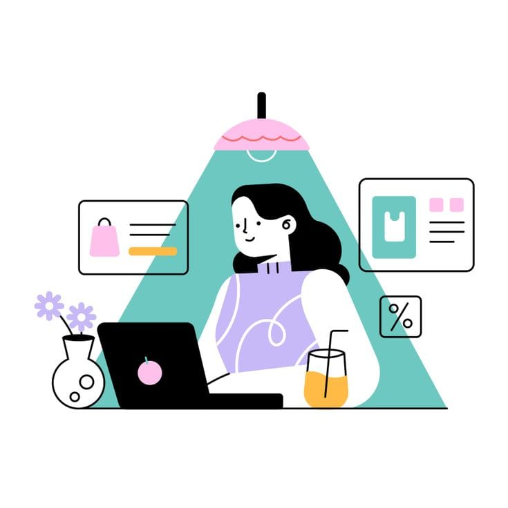

Hi! I'm Hapijatul Rahmah, a computer science student driven by a passion for technology, web development, and visual arts. I specialize in building modern, responsive websites that are easy to use, combined with solid design principles to capture the perfect user experience. Beyond coding, I love diving into Linux and network security to ensure everything I build runs smoothly and securely. I’m a continuous learner who thrives on expanding my skill set, solving logical problems, and turning creative concepts into fully functional web projects. Let’s connect and create something amazing together!